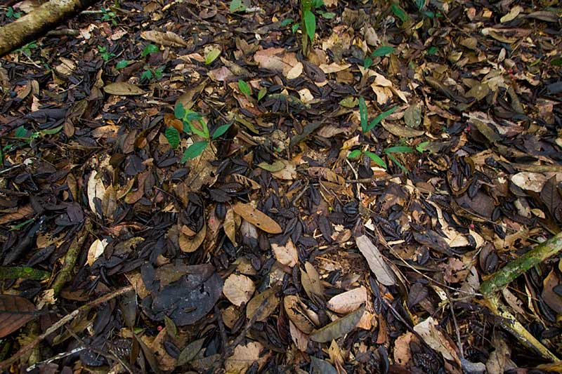

Tudo na natureza tem uma maneira característica de funcionar, e a Floresta Amazônica tem vários arranjos que permitem sua existência e continuidade, envolvendo o solo, as plantas, os micróbios, os animais, a água, os ventos, o sol e muito mais.
Quando vemos tantas árvores e plantas de todo tipo amontoadas na Amazônia, imaginamos que a região tem o solo mais rico e nutritivo do mundo por si só, mas adivinha só, a resposta é não! O solo da Amazônia é em sua maioria muito pobre para sustentar a agricultura por muito tempo pois faltam minerais essenciais, além de as chuvas fortes removerem a camada superficial nutritiva do solo quando está descoberto e sem raízes profundas, processo conhecido como lixiviação.
Mas como um solo naturalmente pobre sustenta a maior floresta do mundo? É tudo um ciclo, é graças à própria floresta que o solo adquire nutrientes. Folhas, galhos, frutos caídos e restos de outros seres que não são plantas apodrecem no chão da floresta sob a ação de microorganismos como fungos e bactérias e com a ajuda de minhocas, formando uma camada de matéria morta sobre o solo que quando decomposta gera adubo natural para as plantas da Floresta, que assim se autossustenta.
Você já viu uma névoa branquinha e úmida com um cheiro ótimo de natureza em cima de uma mata? Pois é, as plantas transpiram e liberam vapor d'água para a atmosfera, e esse vapor ao se juntar com o evaporado de rios, lagos e oceanos forma nuvens por evapotranspiração (de evaporação da água + transpiração das plantas). Essas nuvens são levadas pelas massas de ar a lugares diversos e fatores da atmosfera fazem com que chova e o ciclo da água continue, assim abastecendo regiões com esse precioso líquido.
Sabe-se que na região amazônica existem a maior bacia hidrográfica e a maior floresta equatorial do mundo em contato com o Oceano Atlântico, o que permite quantidades gigantescas de evapotranspiração e formação de muitas nuvens, que geram volumosas chuvas sobre a região, e mesmo assim ainda sobra bastantes nuvens para serem levadas pelos ventos até o Centro-Oeste, Sudeste e Sul do Brasil, evitando um clima árido ou semiárido nessas regiões graças à umidade vinda da Amazônia carregada pelos Rios Voadores, como uma caravana de nuvens prontas para choverem em uma terra distante.
Nos ecossistemas, nenhum ser vivo está sozinho, todos eles se relacionam uns com os outros e com o meio físico, e é através dessas relações ecológicas que a vida se constrói e cresce, abrindo portas para a evolução. Na Amazônia, com a maior biodiversidade do mundo, há uma imensa trama de relações ecológicas pois cada espécie tem seu papel (nicho ecológico) no habitat, e espia, maninho, alguns desses nichos contribuem para a perpetuação da floresta. Por exemplo, o tambaqui é um peixe habitante de igapós, e se alimenta de frutos que caem da mata alagada, como ele não digere muitas sementes, ele as libera pelas fezes, espalhando várias plantinhas novas por aí. Há uma espécie de abelha que só poliniza à noite e sem ela não existiria o guaraná, pois ele não teria sua principal reprodutora. Sem minhocas e fungos dificilmente ocorreria a decomposição de matéria orgânica que produz o húmus e a serrapilheira fertilizantes da Amazônia, e assim ocorre com muito mais seres vivos e elementos.
Como é maravilhosa a Floresta em equilíbrio, não é? Mas eu tenho uma má notícia... ele está se perdendo graças aos impactos ambientais, do qual o mais preocupante é o desmatamento. Descontrolado e crescente, ele põe em risco o ciclo de nutrição do solo, tornando-o infértil pela perda da vegetação original, arrisca a extinção de espécies que dependem de relações ecológicas equilibradas no ecossistema pois queimadas e retiradas de vegetação matam muitos seres vivos direta ou indiretamente e prehudicam o fornecimento de alimento para a cadeia alimentar. O desmatamento também se relaciona à crise hídrica e ao ressecamento do clima, pois reduz a quantidade de chuva formada por evapotranspiração, pondo em risco a alimentação de animais e pessoas, o abastecimento de água e a própria Amazônia, que se chegar a m patamar entre 15 e 25% de destruição pode se tornar uma Savana seca, desequilibrando a floresta, o umidificador do mundo, a bacia hidrográfica, a vida de populações tradicionais ou não e o futuro do planeta.
Tudo isso faz da destruição da Amazônia uma dívida com o futuro, um caminho perigoso para a humanidade, por isso, a Amazônia vale muito mais equilibrada e em pé do que desmatada.
Projeto Angelim Vermelho | Desenvolvido por Maria Eduarda Ferreira Rodrigues e Sabrina da Paz Alves | Fundação Matias Machline - 2021